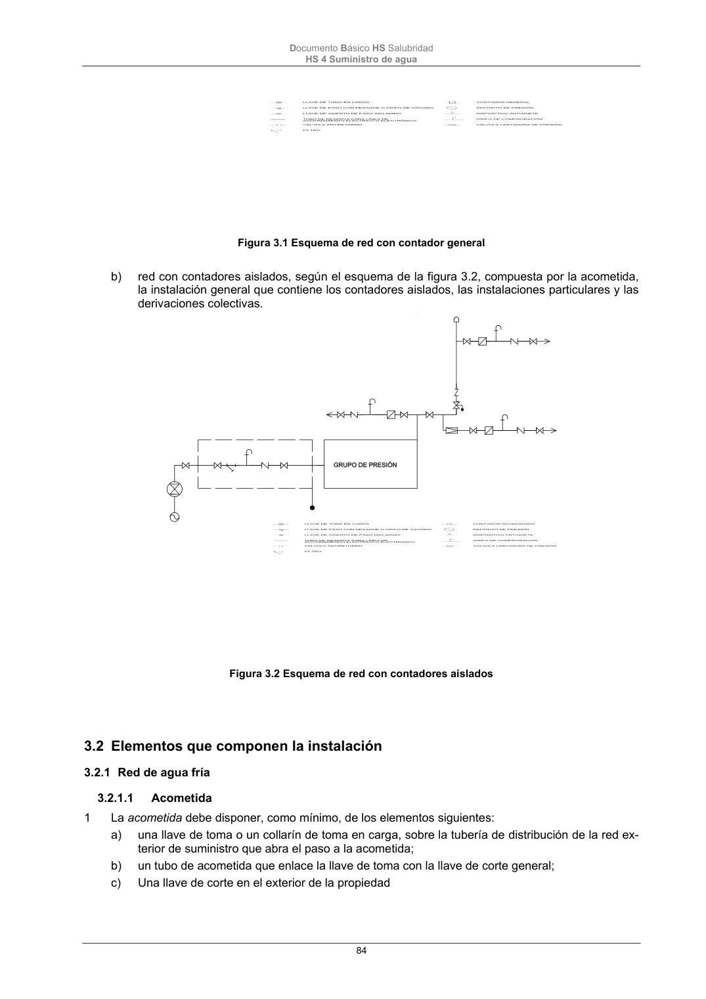

DB-HS · Página 84 · versión 2022-06-14
SHA256: 68df3caacc95f71aee2ec1ba7b2c65ae66155c21e3a8785521b8fdd4fd640d3b · página física 84 de 184 · métodos de encabezado
solo si están cotejados.
Formatos: Markdown · JSON de bloques · PDF p. 84 · imagen PNG
Documento Básico HS Salubridad HS 4 Suministro de agua 84 Figura 3.1 Esquema de red con contador general b) red con contadores aislados, según el esquema de la figura 3.2, compuesta por la acometida, la instalación general que contiene los contadores aislados, las instalaciones particulares y las derivaciones colectivas. Figura 3.2 Esquema de red con contadores aislados 3.2 Elementos que componen la instalación 3.2.1 Red de agua fría 3.2.1.1 Acometida 1 La acometida debe disponer, como mínimo, de los elementos siguientes: a) una llave de toma o un collarín de toma en carga, sobre la tubería de distribución de la red ex- terior de suministro que abra el paso a la acometida; b) un tubo de acometida que enlace la llave de toma con la llave de corte general; c) Una llave de corte en el exterior de la propiedad
